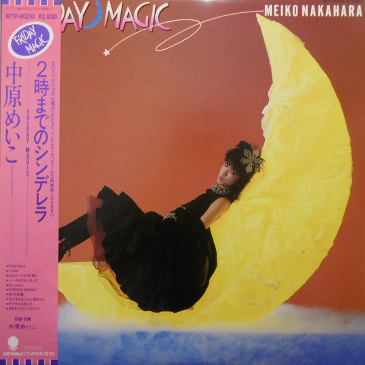
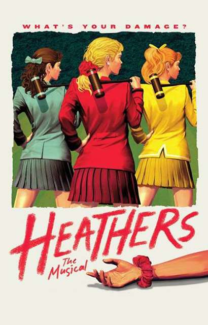
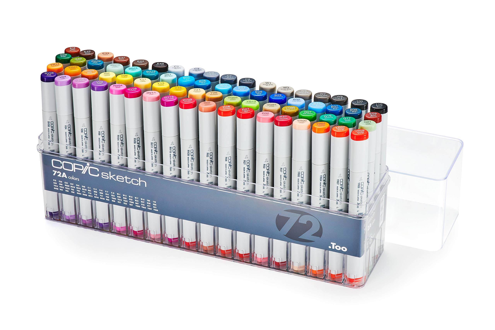
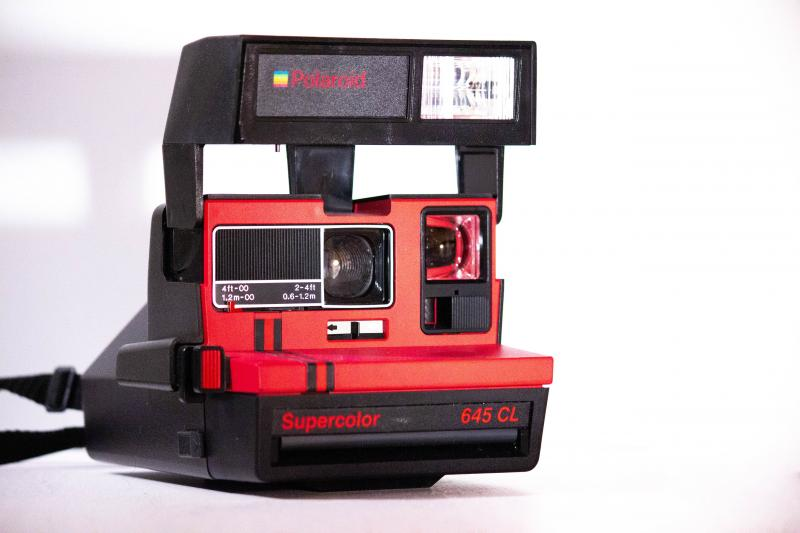

Corbin's Christmas Wishlist
Each image links to something releated to the item!
2時までのシンデレラ~Friday Magic~ by Meiko Nakahara

2時までのシンデレラ~Friday Magic~, more commonly known simply as Friday Magic, is
an album made by Japanese city pop artist Meiko Nakahara. The album
contains 10 tracks and was originally released on a double-sided cassette
tape. The most popular song on this album is titled "Fantasy," and is the
first track on side A. Currently, the entire album is not avalible on
Spotify due to unknown reasons. She released this album in 1982, however
she disappeared around 30 years ago. It's unknown where she is, but it is
known that she has helped compose many songs up to 2019. The main reason I
want this album is just to experience the rest of the songs it holds!
Fantasy is such a great song, and Meiko is a wonderful singer!
Heathers the Musical (2014) Poster

Heathers, 2014, is just a really good musical! I really enjoy it and its cast. My favorite song is Candy Store. The sad part about Heathers is how it's kind of obscure, even though it's a good movie (1988/1989) and musical! Rest in peace to Kim Walker, the original Heather Chandler! Lisanne Falk and Shannen Doherty are stil alive and well, and the cast of the musical are on their own puruits in life! My favorite character from both sources is Heather Duke, played by Shannen Doherty and Alice Lee.
Copic Markers from the Too Corporation

Copic markers are SUPER expensive but worth it! So I've heard at least, I haven't been able to experience them at all. But maybe one day I can afford em! They're like $5.75 a marker.
No Longer Human by Osamu Daizai

I actually don't know a lot about this book, but I own a manga adaptation
and from what I have read thus far it's very nice. It's suspected that the
book was the author's suicide note before he and his lover jumped into a
river. Of course the story detailed in the book isn't for the feint of heart; detailing terrible things happening to the books main character.
SCP-976 The Desire Camera

SCP-978, The Desire Camera. This camera shows the desires of the person
being photographed. Why do I want this fictional object? It's just cool!
Imagine the possibliites and the scarring! I'd really need amnestics after
seein someone's really weird desire.